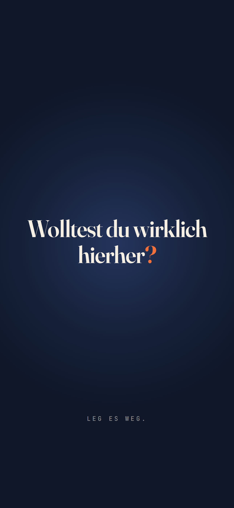
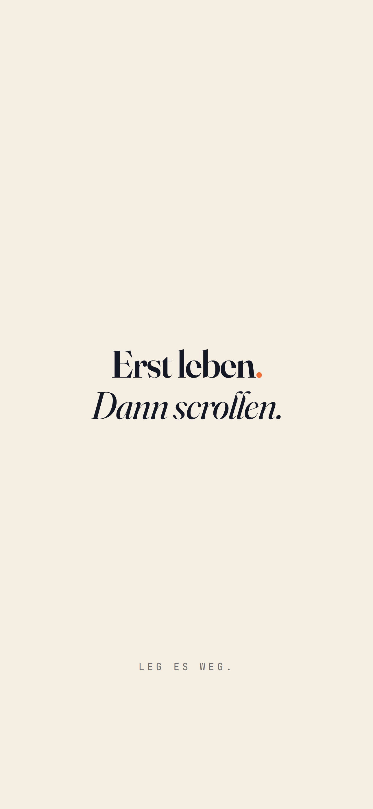
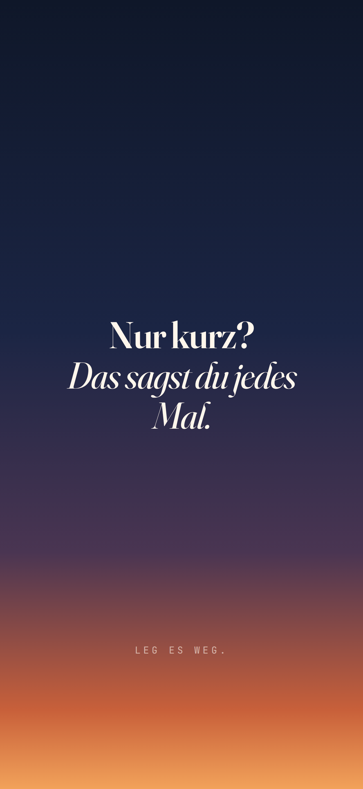
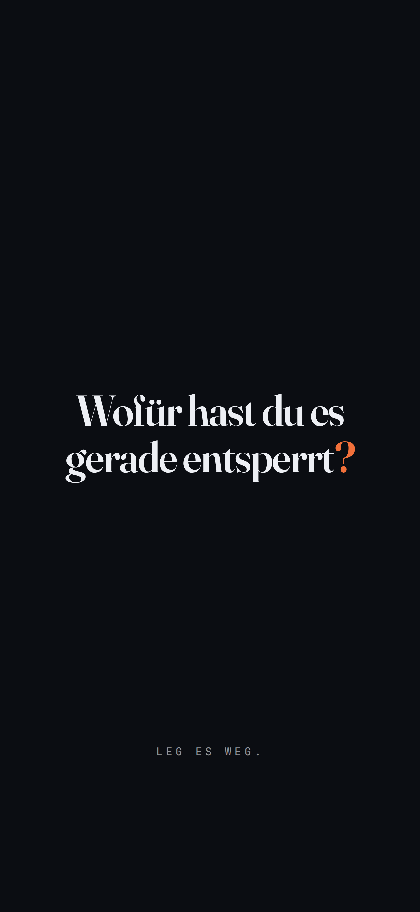
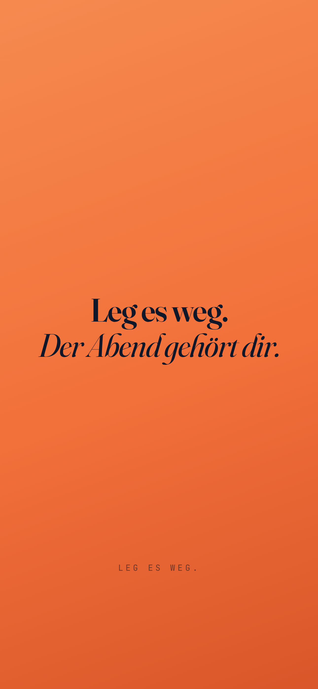

Du wolltest um elf schlafen. Wirklich. Du hast nur noch kurz aufs Handy geschaut – eine Nachricht, ein Video, noch eins. Dann war es Mitternacht. Dann 0:47 Uhr.
In ein paar Stunden klingelt der Wecker, und das Erste, wonach deine Hand greift, ist wieder das Handy. Du bist müde, bevor der Tag überhaupt angefangen hat. Und am Abend geht alles von vorne los.
Wenn du dich darin wiedererkennst: Du bist nicht allein, und du bist nicht schwach. Die Apps auf deinem Handy werden von einigen der klügsten Teams der Welt entwickelt – mit einem einzigen Ziel: dass du bleibst. Gegen so ein System kommst du mit Willenskraft allein nicht an.
Du brauchst ein besseres System.
Genau das hältst du gerade in der Hand. Keinen Vortrag darüber, dass Handys schlecht sind. Kein „Wirf es doch einfach weg“. Sondern einen Plan, der dein Handy langweiliger macht, deine Abende ruhiger – und deine Tage wieder zu deinen eigenen.
Jeden Tag eine Mission, die meistens weniger als zehn Minuten dauert.
Du baust Handy und Abend so um, dass die richtige Entscheidung die leichte ist.
Rückfälle sind eingeplant. Du lernst, wie du am nächsten Tag weitermachst.
Lies die Kapitel 01 bis 06. Das dauert ungefähr 45 Minuten.
Mach den ehrlichen Check und wähle deinen Modus: 7, 14 oder 30 Tage.
Starte mit Tag 1. Eine Mission, ein Häkchen, fertig.
Fang heute Abend an. Nicht morgen, nicht am Montag. Heute.
Für den Einstieg: der Handy-Umbau und das Handy raus aus dem Schlafzimmer. Ideal, wenn du gerade wenig Energie hast.
Für spürbare Veränderung: Umbau plus feste Grenzen für Morgen, Mahlzeiten und die größte Zeitfresser-App.
Für einen echten Neustart: alle vier Wochen – bis handyfreie Abende sich normal anfühlen.
Unsicher? Starte mit sieben Tagen. Du kannst jederzeit verlängern.
Es ist nicht deine Schuld. Aber ab heute deine Entscheidung.
Scrollen fühlt sich an wie eine freie Entscheidung. In Wahrheit arbeiten vier Mechanismen gegen dich – jeden Tag, jede Minute.
Es gibt kein Ende und damit keinen natürlichen Moment zum Aufhören. Eine Zeitung ist irgendwann ausgelesen. Ein Feed nie.
Du weißt nie, ob das nächste Video langweilig oder großartig ist. Genau diese Unberechenbarkeit hält dich – ähnlich wie bei einem Spielautomaten.
Mitteilungen, rote Zahlen, Vibrationen: kleine Signale, die dich zurückholen, auch wenn du eigentlich gar nichts wolltest.
Nach Tausenden Wiederholungen entsperrt dein Daumen das Handy, bevor dein Kopf entschieden hat. Das ist keine Schwäche. Das ist eine Gewohnheit.
Jede Gewohnheit folgt demselben Muster. Wenn du es einmal siehst, erkennst du es überall.
Langeweile, Stress, Müdigkeit, eine Mitteilung – oder einfach eine freie Sekunde.
Du entsperrst das Handy. Oft, ohne es bewusst entschieden zu haben.
Etwas Neues, ein Lacher, Ablenkung. Ein kurzer Moment, der sich gut anfühlt.
Die Zeit ist weg, das Gefühl oft schlechter als vorher – und der Auslöser ist immer noch da.
| Du scrollst, weil … | du eigentlich suchst … | Was wirklich hilft |
|---|---|---|
| dir langweilig ist | Anregung | Zehn Seiten lesen, etwas Neues lernen, rausgehen |
| du gestresst bist | eine Pause | Fenster auf, fünf tiefe Atemzüge, kurz dehnen |
| du dich allein fühlst | Verbindung | Jemanden anrufen oder treffen – eine echte Stimme |
| du müde bist | Erholung | Schlafen gehen. Wirklich. |
| du etwas aufschiebst | Flucht | Zwei Minuten mit der Aufgabe anfangen – nur zwei |
In einer Studie aus dem Jahr 2025 blockierten Erwachsene zwei Wochen lang das mobile Internet auf ihrem Smartphone. 91 % der Teilnehmenden verbesserten sich in mindestens einem Bereich: Aufmerksamkeit, psychisches Wohlbefinden oder Lebenszufriedenheit. Du musst nicht so weit gehen. Aber es zeigt, wie schnell sich dein Kopf erholen kann.
Du kannst nur ändern, was du siehst.
Kreuze an, was auf dich zutrifft. Ehrlich – niemand schaut zu.
Dieser Check ist kein medizinischer Test, sondern ein ehrlicher Spiegel.
Drei Stunden am Tag klingen harmlos. Bis du sie zusammenzählst.
Je nach Hersteller heißt der Bereich z. B. „Digital Wellbeing & Jugendschutz“ oder „Digital Wellbeing und Kindersicherung“.
Pro Tag: Std. Min.
Handy entsperrt pro Tag: Mal
Mitteilungen pro Tag:
Meine drei größten Zeitfresser-Apps:
| Pro Tag | Pro Jahr | In 10 Jahren |
|---|---|---|
| 2 Std. | 30 Tage | 10 Monate |
| 3 Std. | 46 Tage | 15 Monate |
| 4 Std. | 61 Tage | 20 Monate |
| 5 Std. | 76 Tage | 25 Monate |
Gerechnet in vollen 24-Stunden-Tagen. Gemessen an deiner wachen Zeit (rund 16 Stunden am Tag) sind drei Stunden fast ein Fünftel davon.
Std. × 365 ÷ 24
= Tage pro Jahr
Schreib drei Dinge auf, für die du „nie Zeit hast“. Diese Liste brauchst du in Kapitel 06.
Mach dein Handy langweilig – nicht dein Leben.
Willenskraft ist wie ein Akku: Abends ist er leer. Deshalb baust du dein Handy einmal so um, dass du sie kaum noch brauchst. Zwanzig Minuten – danach arbeitet die Umgebung für dich.
Schalte alle Mitteilungen aus, die nicht von echten Menschen kommen: Apps, Shops, Spiele, Nachrichtenseiten. Anrufe und Nachrichten von Menschen, die dir wichtig sind, bleiben.
iPhoneEinstellungen › Mitteilungen › App wählen › „Mitteilungen erlauben“ aus AndroidEinstellungen › Benachrichtigungen › App-BenachrichtigungenAuf den ersten Bildschirm kommen nur Apps, die dir dienen: Kalender, Karten, Kamera, Notizen, Wecker. Soziale Medien, Videos und Spiele verschwinden vom Startbildschirm – sie bleiben installiert, sind aber nicht mehr nur einen Fingertipp entfernt.
iPhoneApp gedrückt halten › App entfernen › „Vom Home-Bildschirm entfernen“ AndroidApp gedrückt halten › „Entfernen“ (die App bleibt in der App-Übersicht)Ohne Farbe verlieren bunte Feeds sofort an Reiz. Viele finden das zuerst seltsam – und merken dann, wie viel seltener sie hängen bleiben.
iPhoneEinstellungen › Bedienungshilfen › Anzeige & Textgröße › Farbfilter › Graustufen AndroidDigital Wellbeing › Schlafenszeitmodus › Graustufen – je nach Hersteller auch unter BedienungshilfenSo gehst du vor: Nimm dir jetzt 20 Minuten, das Handy in der Hand, und geh die sechs Schritte der Reihe nach durch. Abhaken kannst du auf der nächsten Seite.
Setze für deine größte Zeitfresser-App ein tägliches Limit, zum Beispiel 30 Minuten. Wenn es abläuft, musst du bewusst entscheiden, ob du weitermachst. Genau dieser Moment unterbricht den Autopiloten.
iPhoneEinstellungen › Bildschirmzeit › App-Limits › Limit hinzufügen AndroidDigital Wellbeing › Dashboard › App wählen › App-TimerLege fest, ab wann dein Handy abends nur noch das Nötigste kann – zum Beispiel von 22 bis 7 Uhr. Anrufe von wichtigen Kontakten kannst du trotzdem zulassen.
iPhoneEinstellungen › Bildschirmzeit › Auszeit – zusätzlich: Einstellungen › Fokus › Schlafen AndroidDigital Wellbeing › Schlafenszeitmodus (mit Graustufen und „Bitte nicht stören“)Melde dich nach jeder Nutzung aus deiner größten Zeitfresser-App ab. Das erneute Einloggen dauert nur Sekunden – aber genau diese Sekunden reichen, damit du merkst: Ich war gerade auf Autopilot.
Menüpfade können sich je nach Gerät, Hersteller und Softwareversion leicht unterscheiden. Wenn du einen Punkt nicht findest: Suche in den Einstellungen nach dem fett gedruckten Stichwort.
Du scrollst nicht überall gleich viel – sondern an bestimmten Orten, zu bestimmten Zeiten.
Wenn-dann-Pläne gehören zu den am besten erforschten Methoden, um Gewohnheiten zu ändern. Das Prinzip: Du entscheidest vorher, was du in einer schwierigen Situation tust. Im Moment selbst musst du dann nicht mehr entscheiden – du folgst nur noch deinem Plan.
Wer den Tag mit dem Feed beginnt, lässt andere bestimmen, woran er als Erstes denkt – und kommt oft schwer wieder heraus.
Deine Regel: Die ersten 30 Minuten gehören dir, nicht dem Handy.
Aus zwei Minuten werden zwanzig. Kaum ein Ort lädt so zum gedankenlosen Scrollen ein.
Deine Regel: Das Handy bleibt draußen.
Bahn, Kasse, Wartezimmer: Jede freie Minute wird sofort gefüllt. So verlernt dein Kopf, einfach mal Pause zu haben.
Deine Regel: Warten darf langweilig sein.
Ein kurzer Blick aufs Handy reicht, um aus der Konzentration zu fallen. Der Weg zurück dauert oft viel länger als der Blick.
Deine Regel: Wenn du dich konzentrieren willst, liegt das Handy in einem anderen Raum.
Die gefährlichste Zone von allen. Du bist müde, deine Willenskraft ist aufgebraucht – und das Licht des Displays hält dich zusätzlich wach.
Deine Regel: Das Bett ist handyfreie Zone.
Wie oft erwischt dich das Handy in welcher Zone? Kreuze an.
| Zone | Selten | Manchmal | Oft | Ständig |
|---|---|---|---|---|
| 1 · Nach dem Aufwachen | ||||
| 2 · Im Bad | ||||
| 3 · Beim Warten | ||||
| 4 · Bei Arbeit oder Lernen | ||||
| 5 · Im Bett |
Wo erwischt es dich am häufigsten? Schreib deinen eigenen Plan.
WENN
DANN
Sag dir innerlich: „Da ist der Drang.“ Nur feststellen, nicht bewerten.
Drei langsame Atemzüge: durch die Nase ein, lange durch den Mund aus.
„Was brauche ich gerade wirklich?“ Dann entscheidest du – nicht dein Daumen.
Ein Drang ist wie eine Welle: Er steigt, erreicht seinen Höhepunkt und ebbt wieder ab – wenn du ihm nicht sofort folgst. Jedes Mal, wenn du eine Welle vorbeiziehen lässt, wird die nächste ein bisschen kleiner.
Dein Abend entscheidet, wie dein nächster Morgen aussieht.
Es kommt an seinen Ladeplatz – außerhalb des Schlafzimmers. Ab jetzt ist es nicht mehr in Reichweite.
Schreib drei Dinge für morgen auf Papier. Was aufgeschrieben ist, muss dein Kopf nicht mehr festhalten.
Lesen, duschen, dehnen, ein Gespräch, eine Tasse Tee. Etwas, das dich runterfahren lässt, statt dich aufzudrehen.
Licht dimmen, kurz lüften, drei langsame Atemzüge. Dein Körper versteht das Signal.
Und wenn du nicht einschlafen kannst? Aufstehen ist erlaubt. Das Handy nicht.
Such dir heute einen festen Ort außerhalb des Schlafzimmers: Flur, Küche oder Wohnzimmer. Stell eine kleine Schale oder Box hin. Das ist ab jetzt der Ort, an dem dein Handy übernachtet.
Dann ist ein einfacher Wecker die beste Anschaffung dieses Monats – es gibt ihn schon für rund 10 €. Bis dahin: Handy in den Flugmodus, Display nach unten und so weit vom Bett entfernt, dass du zum Ausschalten aufstehen musst.
Schlafenszeit: Uhr
Handy an den Ladeplatz: Uhr
Mein Ladeplatz:
Mein Ersatzritual:
Hake jeden Abend ab, an dem dein Handy pünktlich an seinem Ladeplatz lag.
Eine Gewohnheit kannst du nicht löschen. Du kannst sie nur ersetzen.
Eine Mission pro Tag. Meistens unter zehn Minuten.
Du misst ehrlich, baust dein Handy um und holst es aus dem Schlafzimmer.
Morgenregel, handyfreie Mahlzeiten, Wenn-dann-Pläne – und eine App muss gehen.
Das Anti-Scroll-Menü wird Alltag. Du entdeckst, was dir wirklich guttut.
Offline-Zeiten, deine eigenen Regeln und dein Plan für die Zeit danach.
Lies die Mission des Tages. Wenn sie einen festen Zeitpunkt hat, lege ihn jetzt fest.
Mach sie so früh wie möglich. Erledigt ist besser als perfekt. Dann: Kästchen abhaken.
Trag deine Bildschirmzeit in den Tracker ein (Seite ). Dauert eine Minute.
Mein Tag 1 ist der · Mein Modus: Tage
Schau dir deine Bildschirmzeit an, trag sie ein und mach die Lebenszeit-Rechnung (Seite ).
Schalte alle Mitteilungen aus, die nicht von Menschen kommen (Umbau, Schritt 1).
Bau deinen Startbildschirm um: vorne nur noch Werkzeuge (Umbau, Schritt 2).
Richte Graustufen ein und leg dir den Kurzbefehl an (Umbau, Schritt 3).
Wähle den festen Übernachtungsort für dein Handy – außerhalb des Schlafzimmers. Heute Nacht zum ersten Mal.
Stell die Auszeit bzw. den Schlafenszeitmodus ein (Umbau, Schritt 5). Ab heute ist dein Abend geschützt.
Vergleiche deine Bildschirmzeit mit Tag 1 und beantworte die drei Fragen unten.
Setze ein tägliches App-Limit für deine größte Zeitfresser-App (Umbau, Schritt 4).
Die ersten 30 Minuten nach dem Aufwachen bleiben handyfrei. Ab heute jeden Tag.
Das Handy bleibt vor der Badtür. Den ganzen Tag, jedes Mal.
Alle Mahlzeiten heute ohne Handy – auch wenn du allein isst. Schmeck mal wieder, was du isst.
Schreib deine Wenn-dann-Pläne für alle fünf Gefahrenzonen auf (Seite ).
Lösche die App, die dich am meisten Zeit kostet – oder melde dich ab und nutze sie nur noch im Browser.
Zahlen vergleichen, Fragen beantworten. Wer im Modus Klar ist: geschafft – Glückwunsch!
Wähle deine drei Lieblingsgerichte aus dem Anti-Scroll-Menü und leg den Zettel an den Ladeplatz.
Fang ein Buch an. Zehn Seiten reichen – ab heute an jedem Tag dieser Woche.
20 Minuten spazieren gehen, ohne Handy. Einfach gehen und schauen.
Ruf heute jemanden an, statt zu schreiben. Am besten jemanden, von dem du lange nichts gehört hast.
Probier etwas ohne Bildschirm aus: kochen, backen, reparieren, bauen, nähen, Sport.
Ein Block von zwei Stunden, in dem dein Handy an seinem Ladeplatz bleibt.
Zahlen vergleichen und die drei Fragen beantworten. Drei Wochen – das ist schon ein Muster.
Entfolge allen Accounts, nach denen du dich schlechter fühlst als vorher.
Soziale Medien heute nur am Laptop oder PC – nicht am Handy.
90 Minuten konzentriert arbeiten oder lernen. Das Handy liegt in einem anderen Raum.
Ein halber Tag offline. Sag vorher Bescheid, wie man dich im Notfall erreicht.
Die komplette „letzte Stunde“ von Anfang bis Ende (Seite ).
Ein ganzer Tag ohne Feed – so weit es dein Leben erlaubt. Anrufe sind erlaubt.
Schreib deine fünf persönlichen Handy-Regeln für die Zeit nach dem Plan (Seite ).
Lies das Rückfall-Kapitel noch einmal und leg fest, woran du einen Rückfall erkennst.
Vergleiche deine Zahlen mit Tag 1 und schreib einen kurzen Brief an dich selbst in einem Jahr.
Ein schlechter Abend ist noch lange kein schlechter Monat.
Irgendwann passiert es: Du scrollst doch wieder bis nach Mitternacht. Das ist kein Scheitern, sondern eine Information. Entscheidend ist nicht, ob du fällst – sondern wie schnell du wieder aufstehst.
Einmal ist ein Ausrutscher. Zweimal hintereinander ist der Anfang einer neuen Gewohnheit. Deshalb gilt: Nach einem schlechten Abend ist der nächste Abend dir heilig.
Am Morgen danach – ohne Vorwürfe.
Was war der Auslöser? Müde, gestresst, allein, gelangweilt? Nur benennen, nicht verurteilen.
Dreh an einer Stellschraube: Ladeplatz weiter weg, App-Limit strenger, Graustufen früher.
Heute Abend nur ein Ziel: Das Handy geht pünktlich an seinen Ladeplatz. Mehr nicht.
Wenn dein Handygebrauch dein Leben stark belastet – Schule, Arbeit, Schlaf oder Beziehungen – und du trotz vieler Versuche nicht herauskommst, ist das kein Grund zur Scham. Sprich mit deiner Hausarztpraxis oder wende dich an eine Suchtberatungsstelle in deiner Nähe.
Mein häufigster Auslöser:
Meine erste Stellschraube:
Ihr verbringt den Abend zusammen – auf zwei verschiedenen Bildschirmen?
Es setzt sich aus „phone“ und „snubbing“ (jemanden vor den Kopf stoßen) zusammen: Man schaut aufs Handy, während jemand mit einem spricht. Fast jeder tut es – und fast jeder spürt es, wenn der andere es tut.
Stellt ab einer festen Uhrzeit, zum Beispiel 20:30 Uhr, einen Korb in den Flur. Alle Handys kommen hinein – auch die der Erwachsenen. Kinder machen nach, was ihr tut, nicht, was ihr sagt.
Ein Abend pro Woche komplett ohne Bildschirme. Tragt ihn in den Kalender ein wie einen festen Termin – und plant vorher, was ihr stattdessen macht: gemeinsam kochen, ein Spaziergang nach dem Essen, ein Puzzle, einander vorlesen.
| Tag | Bildschirmzeit | Entsperrt | Handy am Ladeplatz | Mission erledigt | Wie geht’s mir? (1–5) |
|---|---|---|---|---|---|
| 01 | 1 2 3 4 5 | ||||
| 02 | 1 2 3 4 5 | ||||
| 03 | 1 2 3 4 5 | ||||
| 04 | 1 2 3 4 5 | ||||
| 05 | 1 2 3 4 5 | ||||
| 06 | 1 2 3 4 5 | ||||
| 07 | 1 2 3 4 5 | ||||
| 08 | 1 2 3 4 5 | ||||
| 09 | 1 2 3 4 5 | ||||
| 10 | 1 2 3 4 5 | ||||
| 11 | 1 2 3 4 5 | ||||
| 12 | 1 2 3 4 5 | ||||
| 13 | 1 2 3 4 5 | ||||
| 14 | 1 2 3 4 5 | ||||
| 15 | 1 2 3 4 5 | ||||
| 16 | 1 2 3 4 5 | ||||
| 17 | 1 2 3 4 5 | ||||
| 18 | 1 2 3 4 5 | ||||
| 19 | 1 2 3 4 5 | ||||
| 20 | 1 2 3 4 5 | ||||
| 21 | 1 2 3 4 5 | ||||
| 22 | 1 2 3 4 5 | ||||
| 23 | 1 2 3 4 5 | ||||
| 24 | 1 2 3 4 5 | ||||
| 25 | 1 2 3 4 5 | ||||
| 26 | 1 2 3 4 5 | ||||
| 27 | 1 2 3 4 5 | ||||
| 28 | 1 2 3 4 5 | ||||
| 29 | 1 2 3 4 5 | ||||
| 30 | 1 2 3 4 5 |
Tipp: Kreise die Zahl ein, die zu deinem Tag passt. 1 = sehr schlecht, 5 = richtig gut. Nach 30 Tagen siehst du auf einen Blick, wie Bildschirmzeit und Stimmung zusammenhängen.
Schneide die Karten aus und leg sie dorthin, wo die Situation passiert: ans Bett, an den Schreibtisch, an den Ladeplatz, an den Badezimmerspiegel.
Ein Versprechen, das du aufschreibst, hältst du öfter als eines, das du nur denkst.
Ich, ,
entscheide mich ab dem für den Modus
7 Tage
14 Tage
30 Tage
Mach ein Foto davon – und leg das Handy danach weg.
Schau zurück, wie weit du gekommen bist.
| Was | Tag 1 | Tag 7 | Tag 14 | Tag 30 |
|---|---|---|---|---|
| Bildschirmzeit pro Tag | ||||
| Handy entsperrt pro Tag | ||||
| Uhrzeit, zu der ich einschlafe | ||||
| Energie am Morgen (1–5) | ||||
| Stimmung insgesamt (1–5) |
Kurz, klar, machbar. Zum Beispiel: „Kein Handy im Schlafzimmer.“
Was möchtest du deinem zukünftigen Ich über diese 30 Tage sagen?
Jedes Mal, wenn du dein Handy aus Gewohnheit in die Hand nimmst, stellt es dir eine Frage zurück. Eine kleine Pause – genau im richtigen Moment.

01
02
03
04
05Die fünf Bilder findest du als eigene Dateien in deinem Download. Sie sind für moderne Smartphones optimiert.
Tausch den Sperrbildschirm jede Woche aus. Was dein Auge jeden Tag sieht, übersieht es irgendwann – ein neues Motiv holt die Frage zurück in dein Bewusstsein.
| Nr. | Motiv | Am besten für … |
|---|---|---|
| 01 | „Wolltest du wirklich hierher?“ | den Autopiloten: wenn du ohne Grund entsperrst |
| 02 | „Erst leben. Dann scrollen.“ | die ersten 30 Minuten des Tages |
| 03 | „Nur kurz? Das sagst du jedes Mal.“ | die „Nur-noch-ein-Video“-Falle am Abend |
| 04 | „Wofür hast du es gerade entsperrt?“ | Arbeit und Lernen – zurück zur Aufgabe |
| 05 | „Leg es weg. Der Abend gehört dir.“ | die letzte Stunde vor dem Schlafen |
Dein Handy ist ein großartiges Werkzeug. Es soll dir dienen – nicht dein Leben bestimmen.
Du wirst nicht jeden Abend gewinnen. Niemand tut das. Aber jedes Mal, wenn du dein Handy an seinen Ladeplatz legst und stattdessen zehn Seiten liest, mit jemandem sprichst oder einfach früher schlafen gehst, entscheidest du dich für den Menschen, der du sein willst.
Nicht, weil das Handy böse ist. Sondern weil du entschieden hast.
Dieser Guide bietet allgemeine Informationen und praktische Übungen. Er ersetzt keine medizinische oder psychologische Beratung, Diagnose oder Behandlung. Wenn du stark unter deinem Handygebrauch leidest, wende dich bitte an deine Hausarztpraxis oder eine Suchtberatungsstelle.
Menüpfade können sich je nach Gerät, Hersteller und Softwareversion unterscheiden. Stand: September 2026.
© 2026 Leg es weg. Alle Rechte vorbehalten. Dieses Dokument ist nur für den persönlichen Gebrauch bestimmt.
Stell dir vor, du wachst ausgeschlafen auf – und greifst nicht zuerst zum Handy, sondern zu deinem Tag.